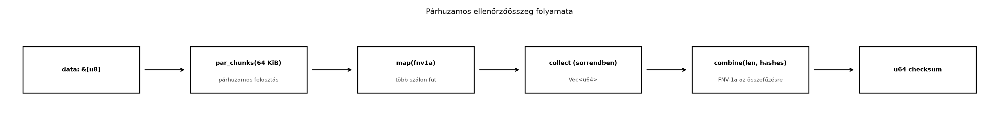

A párhuzamos programozás klasszikus C++-os útja az
std::thread, az std::async vagy a C++17
std::execution policy. Mindegyiknél a programozó dönti el,
hogyan osztja fel a munkát, hogyan csatlakozik a szálakhoz, és ami a
legfontosabb: ő felel azért, hogy ne legyen data race. A Rust rayon
könyvtár ezt a terhet jelentősen csökkenti: egy meglévő iterátorláncot
gyakran egyetlen szó – par_iter – átírásával
párhuzamosíthatunk, miközben a típusrendszer továbbra is garantálja a
memóriabiztonságot.
Tegyük fel, hogy az rkv snapshot-fájlja több tíz megabájtos, és
minden mentésnél ellenőrzőösszeget akarunk számolni. A C++17
std::transform_reduce std::execution::par
policyvel elvileg párhuzamosan végzi a map-reduce lépést, de a szabvány
nem garantálja, hogy ténylegesen párhuzamos lesz: a policy csak
engedély, nem parancs. A Rustban a rayon ellenben garantáltan
munkaellopásos ütemezőt használ, és a párhuzamos iterátorok a megszokott
Iterator API-ra hasonlítanak, így a kód olvasható
marad.
Az rkv esetében a korábbi Iterátorok: lusta
adapterek és saját iterátor alfejezetben megírtuk a
Keys<'a> iterátort, és láttuk, hogyan fűzhetők
adapterek a lusta láncba. A rayon ugyanezt a szemléletet terjeszti ki
több szálra, de a párhuzamos iterátoroknak szigorúbb követelményei
vannak, mert az elemek feldolgozása más-más szálon történhet.
Definíció. A rayon párhuzamos iterátor
(parallel iterator) a szekvenciális Iterator-hoz hasonló
absztrakció, amely a gyűjtemény elemeit több szálon, felosztva dolgozza
fel. A három fő belépési pont:
par_iter() – párhuzamosan iterál kölcsönzött elemeken
(&T),par_iter_mut() – párhuzamosan iterál változtatható
kölcsönzéseken (&mut T),into_par_iter() – párhuzamosan fogyasztja el a
gyűjteményt, tulajdonba véve az elemeket.Szabály. A párhuzamos iterátorok minden
closure-jének, amelyet map, filter, for_each vagy hasonló adapter kap,
Send és Sync követelménynek kell megfelelnie.
Ennek oka, hogy a rayon a munkát más szálakra költöztetheti, és a
closure-ök által befogott értékeknek is át kell tudniuk lépni a
szálhatárokat. A rayon ezt a ParallelIterator trait
boundjaiban rögzíti: a closure Fn + Send +
Sync kell, hogy legyen. Ez a C++-ban nem létezik: ott a
programozónak kell ellenőriznie, hogy a lambda által használt adatok
biztonságosak-e.
Definíció. A munkaellopás (work stealing) olyan párhuzamos ütemezési stratégia, amelyben minden szál rendelkezik egy saját feladatsorral; ha egy szál kifogy a munkából, más szálak sorából „lop” feladatokat. Ez kiegyensúlyozott terhelést ad akkor is, ha a feladatok mérete egyenetlen. A rayon alapértelmezett ütemezője munkaellopást használ.
Szabály. A rayon API lehetővé teszi
a párhuzamos végrehajtást, de a tényleges hardveres párhuzamosságot a
szálkészlet mérete és a terhelés dönti el: egyetlen szálra konfigurált
készlettel (ThreadPoolBuilder::new().num_threads(1))
ugyanaz az API és ugyanaz az eredmény, szekvenciálisan fut (ellenőrzött:
minden elem ugyanazon a szálon dolgozódik fel). A
par_iter().map(...).collect::<Vec<_>>()
megtartja az eredeti sorrendet, mert a collect gondoskodik
a helyes pozícióba helyezésről, de a for_each
mellékhatásainak sorrendje és a részeredmények kombinálásának
zárójelezése az ütemezéstől függ.
Szabály (reduce). A
reduce(identity, op) helyességéhez két feltétel kell: az
identity az op semleges eleme, és az
op asszociatív. Kommutativitás nem kell: a
rayon a részeredményeket sorrendben kombinálja, ezért egy asszociatív,
de nem kommutatív művelet (például szövegek összefűzése) is helyes
eredményt ad (ellenőrzött: 1000 elem összefűzése azonos a
szekvenciálissal). A nem asszociatív művelet (például kivonás) eredménye
függ a zárójelezéstől, tehát az ütemezéstől.
Lebegőpontos összegzés. Az f64
összeadás nem asszociatív:
((1e16 + 1.0) + -1e16) + 1.0 = 1, míg
(1e16 + 1.0) + (-1e16 + 1.0) = 0. A rayon sum
részösszegeket kombinál, ezért a párhuzamos és a szekvenciális
f64 összeg az utolsó bitekben eltérhet (ellenőrzött:
egymillió elemen 42822.895499999584 szemben
42822.895500000035-tel, nem azonos bitek), és futásonként a
szétosztás miatt is változhat. Ne ígérjünk bitpontos, sorrendfüggetlen
float-eredményt; relatív hibahatárral összehasonlítsunk, vagy rögzített
összeadási sorrendet használjunk.
Amdahl-törvény. Ha a program hányada párhuzamosítható, a fennmaradó hányad pedig soros, akkor szál esetén az elérhető maximális gyorsulás:
Például ha a kód 90%-a párhuzamosítható (), akkor végtelen sok szálon is legfeljebb -szeres gyorsulás érhető el; ha csak 50% párhuzamosítható, a maximum 2-szeres. A valóságban a párhuzamosításnak fix overheadje is van (szinkronizáció, feladatütemezés, cache-koherencia), így kis munkák esetén a párhuzamos változat lassabb lehet a szekvenciálisnál.
A C++17 std::transform_reduce párhuzamos policyvel
map-reduce szerűen összegezhetünk:
#include <execution>
#include <numeric>
#include <vector>
long long sum_of_squares(const std::vector<int>& v) {
return std::transform_reduce(
std::execution::par,
v.begin(), v.end(),
0LL,
std::plus<>{},
[](int x) { return static_cast<long long>(x) * x; }
);
}Rustban ugyanez a rayonnal:
use rayon::prelude::*;
fn sum_of_squares(v: &[i32]) -> i64 {
v.par_iter()
.map(|&x| i64::from(x) * i64::from(x))
.sum()
}A két kód felületesen hasonló, de a különbség lényeges. A C++-ban a
std::execution::par nem garantál tényleges párhuzamosságot,
és a lambda által befogott állapotra semmilyen típusbiztonsági
ellenőrzés nincs; a data race-t elkerülő fegyelem a programozóé. A
Rustban a par_iter closure-je csak akkor fordul, ha a
befogott értékek Send és Sync, így a fordító
kizárja a megosztott állapotból eredő adatversenyeket. Ráadásul a rayon
munkaellopásos ütemezője garantáltan párhuzamosít, ha a munka mérete
indokolja.
Munkakönyvtár: ~/rust-labor/rkv/
A labor célja, hogy az rkv snapshot-fájljaiból párhuzamosan
számoljunk ellenőrzőösszeget, és azt a mentéskor el is tároljuk,
visszaolvasáskor pedig ellenőrizzük. A snapshot byte-sorozat, amelyet
nagy méret esetén érdemes több szálon feldolgozni. Az rkv-core crate-hez
hozzáadjuk a rayon függőséget, létrehozunk egy checksum
modult, és példaprogrammal összehasonlítjuk a szekvenciális és a
párhuzamos változatot.
A specifikáció. A checksum egy kétszintű
hash (hash-lista, a Merkle-fa egyszerűsített alakja): (1) a
bemenetet rögzített, CHUNK_SIZE = 64 KiB méretű darabokra
osztjuk, és minden darabra FNV-1a hash-t számolunk; (2) a darabhash-eket
sorrendben összefűzzük a teljes bemenet hosszával
együtt, és az összefűzött bájtokra újra FNV-1a hash-t számolunk. A
szekvenciális és a párhuzamos változat ugyanazt a
függvényt számolja, azonos darabhatárokkal: csak az (1) lépés
fut más módon (iterátorral, illetve párhuzamosan), a (2) lépés közös.
Ezért az eredményük bitre azonos. Az FNV-1a nem kriptográfiai hash:
véletlen sérülés (bitbillenés, csonka fájl) észlelésére való, szándékos
módosítás ellen nem véd; ahhoz SHA-256 kell.
Miért nem XOR a kombináció? Kézenfekvő ötlet a darabhash-eket XOR-ral
kombinálni (reduce(|| 0, |a, b| a ^ b)). Az XOR asszociatív
és kommutatív, így a párhuzamos reduce sorrendje nem számít, de épp
ezért érzéketlen a darabok sorrendjére és a duplikált
darabpárokra (b ^ b = 0): két darab felcserélése, vagy egy
darabpár kettőzése ugyanazt az értéket adná. Integritás-ellenőrzéshez ez
nem elfogadható. A sorrendérzékenységet itt a rendezett összefűzés adja;
a párhuzamosság ennek ellenére megmarad, mert a darabhash-ek számítása a
költséges lépés, az összefűzés pedig csak a darabonként 8 bájtot
dolgozza fel. A collect az indexelt párhuzamos iterátor
elemeit az eredeti sorrendben gyűjti.
Kódblokk — fájl: rkv-core/Cargo.toml · művelet:
beillesztés a [dependencies] szakaszba · ellenőrzés:
cargo build -p rkv-core
rayon = "1"(A tesztek a már meglévő tempfile dev-függőséget
használják.)
checksum
modulHozzuk létre az rkv-core/src/checksum.rs fájlt:
Kódblokk — fájl: rkv-core/src/checksum.rs ·
művelet: új fájl (az 5. lépés tesztmodulja kerül a végére) · ellenőrzés:
cargo build -p rkv-core
use std::io;
use std::path::{Path, PathBuf};
use rayon::prelude::*;
/// A darabméret. A checksum definíciójának része: más darabméret más értéket ad.
pub const CHUNK_SIZE: usize = 64 * 1024;
/// FNV-1a, 64 bit: gyors, nem kriptográfiai hash. Véletlen sérülés
/// (bitbillenés, csonka fájl) észlelésére alkalmas, szándékos módosítás
/// ellen nem véd (ahhoz SHA-256 kell).
fn fnv1a(bytes: &[u8]) -> u64 {
let mut hash = 0xcbf2_9ce4_8422_2325u64;
for &b in bytes {
hash ^= u64::from(b);
hash = hash.wrapping_mul(0x100_0000_01b3);
}
hash
}
/// A gyökérhash: a teljes hossz és a darabhash-ek *sorrendben* összefűzve, újra FNV-1a-val.
/// Az összefűzés sorrend- és hosszérzékeny, ezért darabcsere, duplikált darab
/// vagy elhagyott darab megváltoztatja az eredményt (az XOR-kombináció nem).
fn combine(len: usize, chunk_hashes: &[u64]) -> u64 {
let mut bytes = Vec::with_capacity(8 + chunk_hashes.len() * 8);
bytes.extend_from_slice(&(len as u64).to_le_bytes());
for hash in chunk_hashes {
bytes.extend_from_slice(&hash.to_le_bytes());
}
fnv1a(&bytes)
}
/// Szekvenciális ellenőrzőösszeg: darabonkénti FNV-1a, majd `combine`.
pub fn sequential_checksum(data: &[u8]) -> u64 {
let hashes: Vec<u64> = data.chunks(CHUNK_SIZE).map(fnv1a).collect();
combine(data.len(), &hashes)
}
/// Párhuzamos ellenőrzőösszeg: a darabhash-eket párhuzamosan számítja, de a
/// `collect` megtartja a darabok sorrendjét, a `combine` pedig ugyanaz a
/// függvény: a két változat bitre azonos eredményt ad.
pub fn parallel_checksum(data: &[u8]) -> u64 {
let hashes: Vec<u64> = data.par_chunks(CHUNK_SIZE).map(fnv1a).collect();
combine(data.len(), &hashes)
}
fn sum_path(path: &Path) -> PathBuf {
let mut name = path.as_os_str().to_owned();
name.push(".sum");
PathBuf::from(name)
}
/// Elmenti az adatot és mellé az ellenőrzőösszeget (`<fájl>.sum`, 16 hexa számjegy).
pub fn save_with_checksum(path: &Path, data: &[u8]) -> io::Result<u64> {
let checksum = parallel_checksum(data);
std::fs::write(path, data)?;
std::fs::write(sum_path(path), format!("{checksum:016x}\n"))?;
Ok(checksum)
}
/// Visszaolvasáskor újraszámolja az összeget; `Ok(false)`, ha eltér a mentettől.
pub fn verify_file(path: &Path) -> io::Result<bool> {
let data = std::fs::read(path)?;
let saved = std::fs::read_to_string(sum_path(path))?;
let saved = u64::from_str_radix(saved.trim(), 16)
.map_err(|e| io::Error::new(io::ErrorKind::InvalidData, e))?;
Ok(parallel_checksum(&data) == saved)
}A par_chunks a ParallelSlice trait
metódusa, amely párhuzamosan iterál a szelet darabjain. A
map minden darabra kiszámítja az FNV-1a hash-t, a
collect pedig a darabok sorrendjében
Vec<u64>-be gyűjti őket. A
save_with_checksum az adat mellé egy
<fájl>.sum fájlba menti az összeget, a
verify_file visszaolvasáskor újraszámolja és összeveti;
hiányzó vagy olvashatatlan összegfájl hiba (nem
„rendben”). (A tartós, atomikus mentés lépései, az fsync és
a könyvtár szinkronizálása, az I/O és szerializáció:
fájlok, pufferelés, serde alfejezetben szerepelnek; itt az
ellenőrzőösszegen van a hangsúly.)
Kódblokk — fájl: rkv-core/src/lib.rs · művelet:
beillesztés a pub mod sorok közé · ellenőrzés:
cargo build -p rkv-core
pub mod checksum;Hozzuk létre az rkv-core/examples/checksum_bench.rs
fájlt:
Kódblokk — fájl:
rkv-core/examples/checksum_bench.rs · művelet: új fájl ·
ellenőrzés:
cargo run --release -p rkv-core --example checksum_bench
use std::time::Instant;
use rkv_core::checksum::{parallel_checksum, sequential_checksum};
fn main() {
let data = vec![0xABu8; 64 * 1024 * 1024]; // 64 MiB
let start = Instant::now();
let seq = sequential_checksum(&data);
let seq_time = start.elapsed();
let start = Instant::now();
let par = parallel_checksum(&data);
let par_time = start.elapsed();
println!("szekvenciális: {seq_time:?}, checksum = {seq:016x}");
println!("párhuzamos: {par_time:?}, checksum = {par:016x}");
assert_eq!(seq, par);
}A példa 64 MiB adatot generál, és mindkét függvényt lefuttatja; az
assert_eq! a két eredmény azonosságát ellenőrzi. A kimenet
gépfüggő; egy tipikus futás szerkezete (az időket egy gép egyetlen
futása adta, illusztratívak, a checksum az adott bemenetre
determinisztikus):
szekvenciális: 65.9ms, checksum = f5008e7ce99e7039
párhuzamos: 5.48ms, checksum = f5008e7ce99e7039Nagyobb gépen a párhuzamos változat általában gyorsabb, de a különbség nem garantált, és kis adaton a thread pool felépítése miatt a párhuzamos változat lassabb is lehet. A mért időt mérési jegyzőkönyvben érdemes rögzíteni, de következtetést csak megismételhető benchmarkból szabad levonni; az Teljesítmény: mérés, profilozás, allokáció, release-beállítások alfejezetben a Criterion benchmark-crate-tel fogjuk ezt a függvényt mérni. A benchmark előtt az egyenértékűséget tesztek igazolják.
A teszteknek két kérdésre kell válaszolniuk: ugyanazt számolja-e a
két változat (üres, egybájtos, a darabhatáron és azon túl átnyúló,
véletlen bemeneten), és észreveszi-e a checksum a darabcserét, az
elhagyott és a duplikált darabot, valamint a mentett fájl egyetlen
bitnyi sérülését. Az xor_combination_is_blind_to_duplicates
teszt az eredeti, XOR-os kombináció hibáját is megmutatja.
Kódblokk — fájl: rkv-core/src/checksum.rs ·
művelet: beillesztés a fájl végére · ellenőrzés:
cargo test -p rkv-core checksum → 5 sikeres teszt
#[cfg(test)]
mod tests {
use super::*;
/// Determinisztikus álvéletlen bemenet (LCG), a külső crate nélkül.
fn pseudo_random(len: usize, seed: u64) -> Vec<u8> {
let mut state = seed;
(0..len)
.map(|_| {
state = state.wrapping_mul(6364136223846793005).wrapping_add(1442695040888963407);
(state >> 33) as u8
})
.collect()
}
#[test]
fn both_impls_agree_on_boundaries_and_random_input() {
let sizes = [0, 1, 2, CHUNK_SIZE - 1, CHUNK_SIZE, CHUNK_SIZE + 1, 3 * CHUNK_SIZE, 3 * CHUNK_SIZE + 17];
for (i, &len) in sizes.iter().enumerate() {
let data = pseudo_random(len, i as u64 + 1);
assert_eq!(parallel_checksum(&data), sequential_checksum(&data), "len = {len}");
}
}
#[test]
fn empty_and_single_byte_differ() {
assert_ne!(sequential_checksum(b""), sequential_checksum(b"\0"));
assert_ne!(sequential_checksum(b"a"), sequential_checksum(b"b"));
}
#[test]
fn swapped_duplicated_and_dropped_chunks_are_detected() {
let a = vec![1u8; CHUNK_SIZE];
let b = vec![2u8; CHUNK_SIZE];
let c = vec![3u8; CHUNK_SIZE];
let cat = |parts: &[&Vec<u8>]| parts.iter().flat_map(|p| p.iter().copied()).collect::<Vec<u8>>();
let abc = sequential_checksum(&cat(&[&a, &b, &c]));
// Darabcsere:
assert_ne!(abc, sequential_checksum(&cat(&[&b, &a, &c])));
// Elhagyott darab:
assert_ne!(abc, sequential_checksum(&cat(&[&a, &c])));
// Duplikált darabpár: az XOR-kombináció ezt nem látná (b ^ b == 0),
// a sorrendérzékeny összefűzés igen.
assert_ne!(sequential_checksum(&cat(&[&a, &b, &b, &c])), sequential_checksum(&cat(&[&a, &c])));
}
#[test]
fn xor_combination_is_blind_to_duplicates() {
// Az eredeti (hibás) kombináció demonstrációja: a duplikált pár kiesik.
let xor_combine = |chunks: &[&[u8]]| chunks.iter().fold(0, |acc, c| acc ^ fnv1a(c));
let (a, b, c) = ([1u8; 8], [2u8; 8], [3u8; 8]);
assert_eq!(xor_combine(&[&a, &b, &b, &c]), xor_combine(&[&a, &c]));
}
#[test]
fn saved_checksum_detects_corruption() {
let dir = tempfile::tempdir().unwrap();
let path = dir.path().join("snapshot.bin");
let data = pseudo_random(2 * CHUNK_SIZE + 5, 99);
let saved = save_with_checksum(&path, &data).unwrap();
assert_eq!(saved, sequential_checksum(&data));
assert!(verify_file(&path).unwrap());
let mut corrupted = data.clone();
corrupted[CHUNK_SIZE + 3] ^= 0x01; // egyetlen bit
std::fs::write(&path, &corrupted).unwrap();
assert!(!verify_file(&path).unwrap());
std::fs::remove_file(sum_path(&path)).unwrap();
assert!(verify_file(&path).is_err()); // hiányzó összeg: hiba, nem "ok"
}
}A both_impls_agree_on_boundaries_and_random_input a
CHUNK_SIZE körüli hosszakat (CHUNK_SIZE - 1,
CHUNK_SIZE, CHUNK_SIZE + 1) is lefedi, ahol a
darabolás hibái jellemzően megjelennek.

A párhuzamos iterátorlánc elemei ugyanazok, mint a szekvenciális
Iterator-nál: egy adatforrás, egy leképezés és egy
fogyasztó. A különbség az, hogy a par_chunks által
előállított darabokat a rayon ütemezője szétosztja a worker szálak
között, a collect pedig az elemeket az eredeti sorrendben
gyűjti.
Ellenőrzési pont. Az rkv-core a
checksum modult exportálja (CHUNK_SIZE,
sequential_checksum, parallel_checksum,
save_with_checksum, verify_file); a két
checksum-változat azonos darabhatárokkal, azonos hash-listával és azonos
kombinációs függvénnyel dolgozik, a mentett összeg visszaolvasáskor
ellenőrződik. A cargo test --workspace az új teszteket is
sikeresen futtatja.
Továbbvitt eredmény. Az itt létrehozott
checksum modul parallel_checksum és
sequential_checksum függvényeit a Teljesítmény: mérés, profilozás, allokáció,
release-beállítások alfejezet fogja benchmarkolni Criterionnal, és
ott döntjük el, hogy a snapshot-mentésben melyik változatot érdemes
használni.
1. A párhuzamosítás minden áron. A rayon párhuzamos
iterátorai szálakat és feladatokat hoznak létre, ami fix overheaddel
jár. Egy néhány elemből álló tömbön a par_iter gyakran
lassabb, mint a szekvenciális iter. A párhuzamosítást csak
akkor érdemes bevezetni, ha az elemenkénti munka elég nagy, vagy ha az
elemszám elég nagy ahhoz, hogy a munkaellopásos ütemező nyeresége
meghaladja az overheadet. A laborban ezért használtunk 64 MiB
tesztadatot.
2. Rc<RefCell<T>> párhuzamos
closure-ben. A Rc nem Send és nem
Sync, mert a referenciaszámláló nem atomi. Ha egy
par_iter closure megpróbálja befogni, a fordító
hibát ad:
Kódblokk — önálló példa · szándékosan hibás
· várt hiba: E0277
(Rc<RefCell<i32>> cannot be shared between
threads safely)
use rayon::prelude::*;
use std::cell::RefCell;
use std::rc::Rc;
fn main() {
let shared = Rc::new(RefCell::new(0));
let data = vec![1, 2, 3];
data.par_iter().for_each(|x| {
*shared.borrow_mut() += x; // Rc nem Send
});
}A hibaüzenet lényege: Rc<RefCell<i32>>
cannot be shared between threads safely, mert a closure befogott
&Rc<...> referenciája szálak közt osztozna, ehhez
viszont az Rc-nek Sync-nek kellene lennie. A
javítás az, ha valóban megosztott, szálbiztos mutációra van szükség,
akkor Arc<Mutex<T>> vagy
Arc<AtomicI32> használunk. A rayonnal azonban gyakran
jobb megoldás a reduce vagy a map +
collect, amely nem igényel megosztott állapotot.
3. Nem asszociatív kombináló művelet. Ha a
reduce kombináló művelete nem asszociatív (például kivonás,
vagy f64 összeadás, amely csak közelítőleg az), a
párhuzamos eredmény eltérhet a szekvenciálistól. Az asszociatív és
kommutatív műveletek (XOR, egész összeadás) sorrendérzéketlenek, ami
hash-kombinációnál hiba: a laborban ezért nem XOR-t használtunk
(felcserélt vagy duplikált darabot nem venne észre). A kommutativitás
hiánya önmagában nem hiba: egy asszociatív, nem kommutatív művelet a
rayon reduce-ával is helyes. Sorrendfüggő eredményhez a
darabonkénti részeredményeket explicit collect-tel gyűjtjük
(ez megtartja a sorrendet), és utána sorrendben kombináljuk, ahogy a
checksum modul teszi.
4. A par_iter_mut nem enged átfedő
írást. A par_iter_mut párhuzamosan ad
&mut referenciákat az elemekre, de a párhuzamos
iterátor belsőleg felosztja a szeletet, így egyszerre soha nem ad két
&mut referenciát ugyanarra az elemre. Ez azonban azt is
jelenti, hogy a closure-ön belül nem férhetünk hozzá a gyűjtemény
egészéhez; ha például egy Vec-be akarunk közben pusholni,
az adatversenyhez vezetne, és a fordító megakadályozza. A megoldás a
collect vagy a
rayon::prelude::ParallelIterator::collect használata.
Lefordul-e a következő két kód? Ha valamelyik nem, miért, és mi a javítás?
use rayon::prelude::*;
use std::rc::Rc;
fn main() {
let owner = Rc::new(vec![1, 2, 3]);
let sum: i32 = owner.par_iter().sum();
println!("{sum}");
}use rayon::prelude::*;
use std::rc::Rc;
fn main() {
let owner = Rc::new(vec![1, 2, 3]);
let sum: i32 = (0..3).into_par_iter().map(|i| owner[i]).sum();
println!("{sum}");
}Az alábbi C++ kód párhuzamosan számolja ki egy
std::vector<double> elemeinek átlagát (a
std::execution::par feltételezett valós párhuzamossággal).
Írd át Rustra a rayon használatával, és magyarázd el, hogy a Rust
változat miért biztonságosabb.
#include <execution>
#include <numeric>
#include <vector>
double average(const std::vector<double>& v) {
double sum = std::reduce(std::execution::par, v.begin(), v.end(), 0.0);
return sum / v.size();
}Egészítsd ki az rkv-core/src/checksum.rs-t egy
parallel_max függvénnyel, amely párhuzamosan megkeresi egy
&[u32] maximális elemét. Használd a
par_iter max metódusát, és írj tesztet, amely
összehasonlítja a szekvenciális iter().max() eredményével.
A függvény szignatúrája:
pub fn parallel_max(data: &[u32]) -> Option<u32>;A snapshot-mentés jelenleg szekvenciálisan írja a fájlt. Tervezd meg,
hogyan lehetne a parallel_checksum függvényt integrálni a
mentési folyamatba anélkül, hogy a fájlírás párhuzamossá válna. Írd le a
tervezett hívási helyet pszeudokódban vagy Rust-vázlatban, és indokold,
miért érdemes a checksumot a fájl bezárása előtt vagy után
számítani.
Az első kód lefordul, és 6-ot ír ki. A
owner.par_iter() az Rc automatikus
dereferálásával a Vec<i32> elemeire mutató szeletet
(&[i32]) kölcsönöz, és ez kerül át a worker
szálakra. Az i32 Sync, tehát a szelet szálak
közt megosztható; maga az Rc (a referenciaszámláló) a fő
szálon marad, és semmilyen szálhatárt nem lép át. A második kód
nem fordul le (E0277:
Rc<Vec<i32>> cannot be shared between threads
safely): a map closure befogja az owner-t,
vagyis egy &Rc<Vec<i32>> referenciát, a
closure-nek viszont Send + Sync-nek kell lennie. Itt tehát
az Rc maga lépné át a szálhatárt, és a nem atomi
számláló adatversenyes lehetne. Javítás: Arc használata
(vagy a szelet kivétele a szálak indítása előtt):
use rayon::prelude::*;
use std::sync::Arc;
fn main() {
let owner = Arc::new(vec![1, 2, 3]);
let sum: i32 = (0..3).into_par_iter().map(|i| owner[i]).sum();
println!("{sum}");
}A tanulság: nem a gyűjtemény típusa
(Rc<Vec<_>>), hanem az számít, hogy melyik
érték kerül a párhuzamos closure-be.
use rayon::prelude::*;
fn average(v: &[f64]) -> f64 {
let sum: f64 = v.par_iter().sum();
sum / v.len() as f64
}A Rust változat nem engedi, hogy a par_iter closure-je
megosztott állapotot adatversennyel módosítson; a sum egy
fogyasztó, amely belsőleg kezeli a részösszegek kombinálását. Az
f64 összegnél a párhuzamos és a szekvenciális eredmény az
utolsó bitekben eltérhet, mert a lebegőpontos összeadás nem asszociatív.
A C++ std::reduce párhuzamos policyje esetén a
programozónak kell biztosítania, hogy a művelet asszociatív legyen (a
lebegőpontos std::plus csak közelítőleg az), és hogy a
vektor elemeihez ne férjen hozzá másik szál közben. A Rust típusrendszer
az utóbbit a Send és Sync boundokkal
kényszeríti ki.
use rayon::prelude::*;
pub fn parallel_max(data: &[u32]) -> Option<u32> {
data.par_iter().copied().max()
}
#[cfg(test)]
mod tests {
use super::*;
#[test]
fn max_matches_sequential() {
let data = vec![3, 7, 1, 9, 2, 8, 5];
assert_eq!(parallel_max(&data), data.iter().copied().max());
}
#[test]
fn empty_input_yields_none() {
assert_eq!(parallel_max(&[]), None);
}
}A par_iter() &u32 elemeket ad, ezért a
copied() adapterrel u32 értékeket készítünk,
amit a max fogyasztó összehasonlít.
A checksumot a mentés előtt a memóriabeli pufferből számoljuk, és a
fájl mellé mentjük (save_with_checksum); ez a
checksum modul része:
pub fn save_with_checksum(path: &Path, data: &[u8]) -> io::Result<u64> {
let checksum = parallel_checksum(data); // a pufferből, párhuzamosan
std::fs::write(path, data)?; // a fájlírás sorosan marad
std::fs::write(sum_path(path), format!("{checksum:016x}\n"))?;
Ok(checksum)
}A checksumot a fájl írása előtt a memóriabeli pufferből számoljuk,
mert így nem kell a fájlt újra beolvasni, és a párhuzamos feldolgozás a
data szeletet használhatja; a fájlírás közben nem változik
az adat. Ha a fájl bezárása után számítanánk, újabb I/O-t igényelne, és
a párhuzamosítás a háttértár sebességétől függne. A visszaolvasáskor a
verify_file mindig újraszámol, és az eredményt a mentettel
veti össze. A függvény io::Result-ot ad vissza, így a
hibakezelés a hívónál marad. Az igazán tartós mentéshez (ideiglenes
fájl, sync_all, rename,
könyvtár-szinkronizálás) lásd az I/O és
szerializáció: fájlok, pufferelés, serde alfejezetet.
A rayon párhuzamos iterátorokkal (par_iter,
par_iter_mut, into_par_iter) egy meglévő
iterátorlánc egy sor módosításával párhuzamosítható, feltéve, hogy a
closure-ök Send és Sync, és a kombináló
művelet asszociatív. A munkaellopásos ütemező kiegyensúlyozza a
terhelést, a reduce és fold pedig
determinisztikus eredményt ad, ha a művelet kommutatív. A laborban az
rkv-core/src/checksum.rs modulban létrehoztuk a
parallel_checksum és sequential_checksum
függvényeket, amelyek 64 KiB-os darabokra bontva darabonként FNV-1a
hash-t számolnak, majd a darabhash-eket a bemenet hosszával együtt,
sorrendben újra hash-elik (sorrend- és hosszérzékeny kombináció); a
save_with_checksum és a verify_file a mentett
összeget ellenőrzi visszaolvasáskor. A párhuzamos változatot a Teljesítmény: mérés, profilozás, allokáció,
release-beállítások alfejezetben fogjuk benchmarkolni. A
párhuzamosítás csak kellően nagy munkánál kifizetődő; az Amdahl-törvény
és az overhead határt szab a gyorsulásnak.
A nyelvi szabályok a Rust Reference és a The Rust Programming
Language dokumentációján alapulnak. A rayon API-ja
(par_chunks, reduce, max) a crate
dokumentációjában található (https://docs.rs/rayon). A C++17
std::execution policy tényleges párhuzamossága
implementációfüggő; az összevetés csak az API-szintű különbséget
mutatja. A laborban használt rayon főverziója 1, a pontos
verziót a Cargo.lock rögzíti. A gyorsulási adatok
gépfüggők, ezért a példában nem szerepelnek konkrét számok.